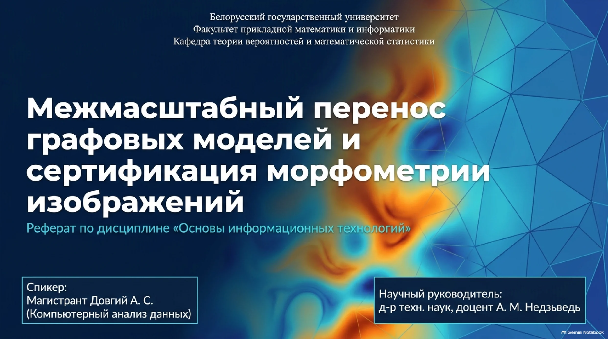
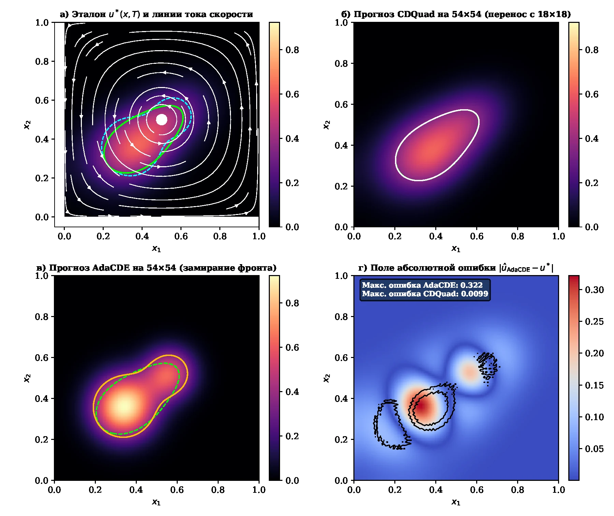

Почему комбинаторные графовые сети теряют перенос при смене разрешения?
Сравнение дискретных 1-шаговых графовых ОДУ и континуально-согласованного вариационного оператора CDQuad.
Комбинаторные ГНС (GRAND, CDE-GRAND, AdaCDE)
На молекулярных графах фиксированной ковалентной топологии (ogbg-moltox21) одношаговый RBF-переключатель в архитектуре автора GRADE повышает ROC-AUC до 0,745. Однако на пространственных сетках изображений ситуация меняется:
- При измельчении шага сетки
h_G → 0разность в соседних узлах убывает какu_j − u_i = O(h_G), и локальный вентиль1 − exp(−γ(u_i − u_j)²)вырождается со скоростью Θ(h²_G) → 0, выключая конвективный перенос. - Строчно-стохастическое
softmax-внимание на стыке сеток со скачком шага2:1порождает нефизический паразитный снос порядкаΘ(h⁻¹_G). - Отсутствует статистический сертификат погрешности площади и барицентра на новой целевой сетке.
Континуально-согласованная квадратура и сертификат
Физический закон (6 интерпретируемых параметров среды на области Ω = (0,1)²) полностью отделён от геометрии конкретной расчётной триангуляции:
- P₁-жёсткость + ячейки Дональда: анизотропный тензор диффузии
K(x)интегрируется в базисе Куранта, а антисимметричные противопоточные потокиF_ij— по замкнутым дуальным контурам с машинной бездивергентностью3,47 × 10⁻¹⁸. - Нелокальный вентиль физического радиуса r₀ > 0: взвешенная площадями ячеек
m_jквадратура гауссова ядра сохраняет порядок аппроксимацииO(h_G)при любом сгущении сетки. - Эллиптический двойственный сертификат: зондирование на 15 модах Неймана в норме
H⁻¹_Gвыдаёт гарантированный интервал ошибки без эталонного решателя за4,2 мс.
Интерактивная презентация проекта (15 слайдов)
Используйте клавиши ← / →, миниатюры ниже или кликните по слайду для полноэкранного просмотра.

Математическое ядро и модульная архитектура CDQuad
Три теоретических столпа метода и четыре слабосвязанных модуля открытого пакета на базе NumPy и SciPy CSR/CSC.
Система ОДУ на ячейках Дональда
− Σ α_ij (F⁺_ij u_i − F⁻_ij u_j) − λ_r m_i u_i
Потоки F_ij интегрируются 3-точечной квадратурой Гаусса—Лежандра по граням Γ*_ij. Бездивергентность Σ_j F_ij = 0 полностью выводит число Пекле Pe из экспоненты Гронуолла.
Двойственный дефект в H⁻¹_G и Split CP
Û_{1−α}(G; T) = q̂_{1−α} · B̂(G; T)
Оператор Рисса E_G = M_G + κ⁻¹_min S_G(K) предфакторизуется один раз для всех 15 косинусных мод Неймана, обеспечивая покрытие ≥ 1 − α − d_TV.
Глобально липшицевы дескрипторы
M₁(u) = M₀⁻¹ ∫_Ω x σ_η(u) dx, L_{M₁} = √2 / (4η m₀)
Логистическое сглаживание порога σ_η устраняет разрывность бинарной сегментации (усиление 4,17 вместо скачка 250×) и переносит сертификат на площадь и барицентр.
Модуль генерации сеток и геометрии (src/meshes.py)
2,9 мс при N = 3025Строит регулярные решётки аппаратного биннинга, возмущённые и сглаженные по Ллойду триангуляции Делоне, вырожденные сенсорные облака со «слепыми пятнами» и несимплициальные графы суперпикселей SLIC. Инкапсулирует метрику в неизменяемый контейнер MeshData и кэширует CSR-оператор продолжения P_G на квадратурную решётку 160×160.
@dataclass
class MeshData:
coords: np.ndarray # (N, 2) координаты узлов в Ω = [0, 1]²
triangles: np.ndarray # (M, 3) симплексы триангуляции Делоне
masses: np.ndarray # (N,) площади барицентрических ячеек Дональда |D_i|
h_max: float # максимальный диаметр элемента h_G
shape_reg: float # параметр регулярности формы ρ(T_h)
prolong_csr: sparse.csr_matrix # оператор подъёма P_G на сетку 160×160
Экспериментальная верификация и морфометрия живых клеток
Переключайте вкладки для просмотра векторных иллюстраций реферата (клик по изображению открывает полный размер).

Двумерная визуализация переноса без дообучения с 18×18 на 54×54 (T = 0,35)
Контур мигрирующего фронта CDQuad на мелкой сетке 54×54 неотличим от континуального эталона u*(x, T), тогда как фронт дипломной модели AdaCDE замирает около начального положения из-за вырождения локального вентиля.
Сводная таблица переносимости без дообучения в синтетической и реальной флуоресцентной микроскопии
| Протокол и целевая сетка | Модель | Ошибка поля L²(Ω) | Площадь |ΔM₀| | Барицентр ‖ΔM₁‖₂ | Скорость фронта / дрейф | Статус переноса |
|---|---|---|---|---|---|---|
| Синтетика: 18×18 → 54×54 (рост узлов 8,4×) | CDQuad (автор) | 0,00146 ± 0,00024 | 0,00039 | 0,00027 | 0,00043 (скор.) | Рост точности в 2,28× (100 % серт.) |
| Синтетика: 18×18 → 54×54 (рост узлов 8,4×) | AdaCDE [3-А] | 0,04251 ± 0,00149 | 0,00248 | 0,00690 | 0,01965 (скор.) | Замирание фронта Θ(h²_G) |
| Синтетика: 18×18 → 54×54 (рост узлов 8,4×) | CDE-GRAND | 0,04983 ± 0,00213 | 0,01006 | 0,00642 | 0,01760 (скор.) | Деградация в 2,65× |
| Синтетика: нерегулярная Делоне (N = 1225) | CDQuad (автор) | 0,00225 ± 0,00031 | 0,00020 | 0,00023 | 0,00032 (скор.) | 100 % покрытие (Û₀,₉₀ = 0,00351) |
| Синтетика: суперпиксели SLIC RAG (K ≈ 300) | CDQuad (диагностика) | 0,02209 ± 0,00158 | 0,00125 | 0,00183 | 0,00417 (скор.) | Флаг RAG: Û₀,₉₀ = 0,07286 |
Живая клетка NPCsingleNucleus.tif: 30×30 → 90×90 |
CDQuad (автор) | 0,1266 | 0,02389 | 0,05321 | 0,0160 (дрейф) | Дрейф ниже в 4,1–4,4× |
Живая клетка NPCsingleNucleus.tif: 30×30 → 90×90 |
AdaCDE / CDE-GRAND | 0,1325 / 0,1390 | 0,01837 / 0,04093 | 0,03455 / 0,03359 | 0,0655 / 0,0700 (дрейф) | Сильный межмасштабный дрейф |
Научные публикации автора и воспроизведение расчётов
Все 4 работы соискателя по теме исследования и команды быстрого запуска вычислительных протоколов.
Адаптивные графовые нейронные сети конвекции-диффузии для гетерогенных графов
А. С. Довгий, К. В. Василевский, А. М. Недзьведь // Вестник БГУ. Серия 1, Физика. Математика. Информатика. — 2026. — В печати.
Графовая нейронная сеть на основе адаптивного уравнения реакции-адвекции-диффузии для задачи классификации молекулярных графов
А. С. Довгий, К. В. Василевский // BIG DATA and Advanced Analytics : сб. науч. ст. XII Междунар. науч.-практ. конф., Минск, 23 апр. 2026 г. — Минск : БГУИР, 2026. — С. 319–329.
Исследование и развитие нейронных сетей конвекции-диффузии для задач машинного обучения на графах
А. С. Довгий ; науч. рук. К. В. Василевский ; Белорусский государственный университет, ФПМИ. — Минск, 2026. — 85 с.
Обучаемое анизотропное ядро в графовых сетях конвекции-диффузии
А. С. Довгий, К. В. Василевский // Сборник работ 83-й научной конференции студентов и аспирантов БГУ. — Минск : БГУ, 2026. — В печати.
Полная воспроизводимость за 1 минуту на CPU
Комплекс реализован на чистом открытом стеке Python 3.11 (NumPy, SciPy CSR/CSC, scikit-image, tifffile) с фиксированным зерном генератора 20261122 без необходимости в GPU.
git clone https://github.com/ihuod/BSU-FIT.git cd BSU-FIT && pip install -r requirements.txt python -m src.exp1_sanity_and_convergence python -m src.exp2_certificate_and_shift python -m src.exp3_applied_morphometry
ihuod.github.io/BSU-FIT